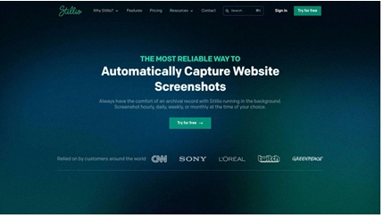
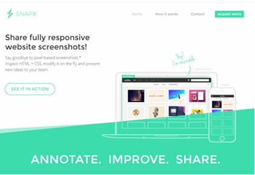

My Projects & Achievements
A record of what I create, practise, and accomplish.
Home |
About Me |
Skills & Education |
Projects & Achievements |
My Media & Interests |
Contact Me
Featured Projects
Project 1: My First Web Page

My first attempt at building a web page with HTML
This project helped me understand how HTML structures headings, paragraphs, links, and images.
What I Learned
- Creating a basic HTML document
- Using headings and paragraphs
- Adding links and images
Project 2: Personal website

A website documenting my learning and development.
This website brings together my background, skills, projects, interests, and contact information.
Website sections
- Personal information
- My WOrk
Achievements
- Learning achievement: Completed my first HTML page.
- Academic achievement: Add a real academic achievement here.
- Personal achievement: Add an achievement you are proud of.
Project Files
Visitors can use the link below to download a sample project document.
Download My Project Report (PDF)
My Next Goals
My future projects will help me develop these abilities:
- Build a complete website with several connected pages.
- Learn CSS to improve the appearance of my website.
- Learn JavaScript to make my website interactive.
© Senet Anbesaw. personal website.